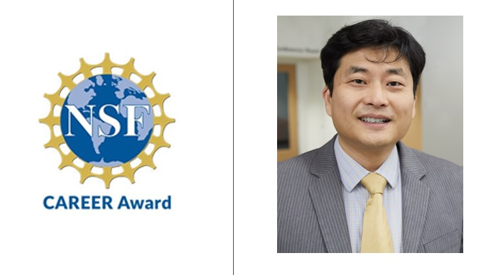
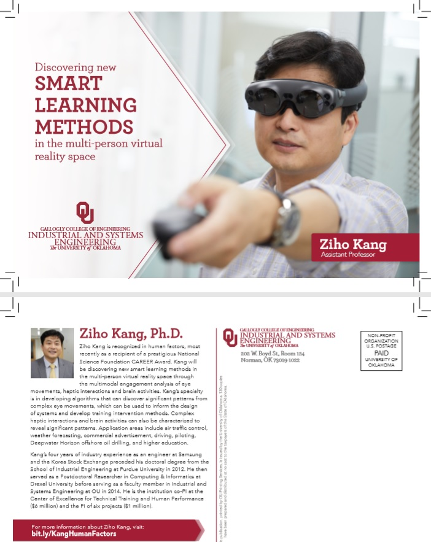

Welcome to the "Human Factors and Simulation" laboratory, or simply, Kang's lab!
- Researchers at Kang's lab bridge three research areas of human factors, operations research, and data analytics.
- After reading this page, please feel free to select any menu options provided above (e.g. people, research, awards).
- If viewing on a cell phone, please select the menu icon(≡) located at the upper right corner.
Research funding sources:
- National Science Foundation (NSF)
- Federal Avaiation Administration (FAA)
- National Academy of Sciences (NAS)
- Microsoft Corporation
Brief Introduction: What is Human Factors (or Human-Integrated Systems Engineering)?
- Definition: Study of the variables that influence human performance and system's goals.
- Research topics: Human behavior, human error, information theory, humans' decision making process, human performance evaluation, user experience (UX) design, visual perception, training, situation awareness, process tracing, among many others.
- Applications: Any human-in-the-loop systems! Possibilties are endless.
- Some researchers in Comutuer Science and Psychology also pursue human factors research.
What makes Kang's lab special?
- We develop automated (or at least semi-automated) algorithms to characterize and cluster human behaviors.
- Algorithms are developed using the concepts in operations research (e.g. transition probabilities) and data analytics (e.g. clustering, prediction models).
- Dr. Kang's specialty is in analyzing spatio-temporal networks (i.e. networks created from data collected across both space and time), especially humans' eye movement networks, in which the results can be used for predictions and training.
- Some example algorithms or mathmatical models we develop or adapt are hierarchical clustering, dynamic time warping (dynamic programming), entropy, graph theory, string edit algorithm, transition probablity, among others.
- Put differently, we develop algorithms to cluster data and design/improve system processes that can benefit humans.
What are the needed skill sets and possible career paths at the lab?
- The student should love computer programming (Java, Matlab, and/or Python) and have the knowledge in the the areas of statistical methods, design of experiments, and/or data analysis algorithms.
- Those who were successful at Kang's lab were able to secure positions in the academy (e.g. tenure-track assistant professor, research fellow) or in the industry as a data analyst (e.g. Microsoft, Amazon, among others).
What is the NSF CAREER award that Dr. Kang received?
- National Science Foundation (NSF) CAREER award is a prestegious award that provides 5 years' worth of research fund to pursue state-of-the-art research activities that can make trasformative impact to the society.
- Dr. Kang's research topic is in transforming the traditional education system through Virtual Reality (VR).
- Details of the research topic is provided below.
RESEARCH FOCUS AT OUR LAB - BRIDGING THE GAP BETWEEN HUMAN FACTORS AND OPERATIONS RESEARCH / DATA ANALYTICS
Announcement: Dr. Kang wins the National Science Foundation (NSF) CAREER Award!

CAREER: Non-text-based smart learning in fully immersive multi-person Virtual Reality using near real-time multimodal analysis of physiological measures
Short description: Non-text-based smart learning refers to technology-supported learning that uses non-text features (i.e. visualized information) and adapted learning materials based on the individual’s needs. Fully immersive multi-person virtual reality (MVR) refers to humans located at different places wearing VR devices to join a single virtual room, a classroom with unlimited size, to learn from an instructor. The learning environment is poised to undergo a major reformation, and MVR will augment, and possibly replace, the traditional classroom learning environment. The purpose of this research is to discover new smart learning methodologies within the MVR environment using nonintrusive multimodal analysis of physiological measures, including eye movement characteristics, haptic interactions, and brain activities. Addressing the variability and complexity of the spatio-temporal data in a timely manner is the key issue, and operations research concepts as well as data science algorithms will be developed and/or adapted to tackle the issue. The near real-time analysis will enable the prediction of whether the learners are currently engaged in learning activities. The predictions will be used to provide timely scaffolding methods that might motivate the learners to re-engage in learning activities.

Click here to better read the descriptions of the above announcement